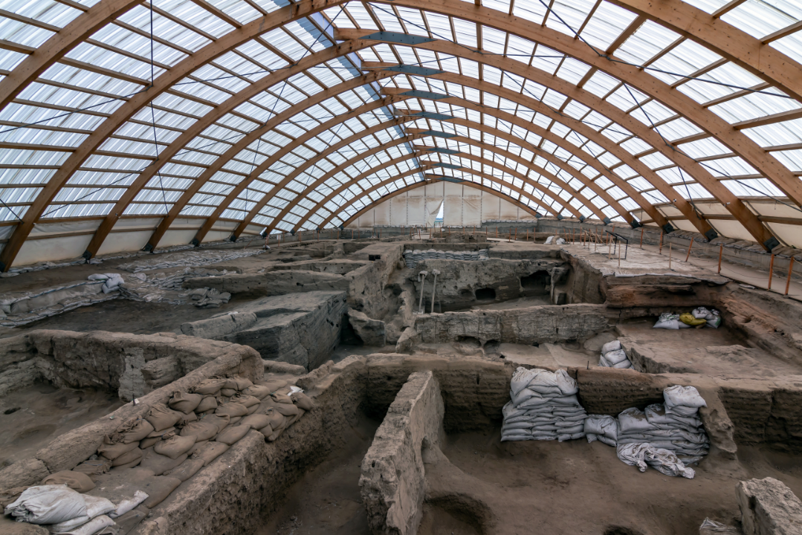

ÇATALHÖYÜK

🏛️ ÇATALHÖYÜK: DÜNYANIN İLK VE EN SIRADIŞI ŞEHRİBugün seni tam 9.400 yıl öncesine, Konya'nın kalbinde yer alan, dünyanın en eski şehirlerinden birine götürüyoruz: Çatalhöyük! Henüz ortada büyük devletlerin, kralların hatta yazı ve tekerleğin bile olmadığı o çok uzak zamanlarda, binlerce insan burada bir arada yaşıyordu.
İşte bu gizemli şehri bu kadar özel yapan ilginç gerçekler:
🪜 Kapısı ve Penceresi Olmayan EvlerÇatalhöyük’te evlerin kapıları veya pencereleri yoktu! "Peki, içeri nasıl giriyorlardı?" dediğini duyar gibiyim. İnsanlar evlerine çatıda açılan bir delikten, tahta bir merdivenle inerek girerlerdi. Bu delik hem evin kapısıydı hem de içerideki ocağın dumanının çıkmasını sağlayan bir bacaydı.
🏘️ Sokaksız Şehir ve Çatıdaki YaşamBu şehirde bizdeki gibi cadde veya sokaklar yoktu. Evler birbirine tıpkı bir bal peteği gibi bitişik inşa edilmişti. Bu yüzden insanlar sokaklarda değil, çatıların üzerinde yürürlerdi! Arkadaşlarına gitmek, oyun oynamak veya komşularla sohbet etmek için damların üzerinde geziniyorlardı. Şehir, dışarıdan bakıldığında devasa bir kale gibi görünüyordu ve bu sayede kendilerini vahşi hayvanlardan koruyorlardı.
🌾 Dünyanın İlk Çiftçileri ve İlk EkmekÇatalhöyük sakinleri tarihin ilk büyük çiftçilerindendi. Burada buğday, arpa, mercimek ve bezelye yetiştiriyorlardı. Belki de dünyanın ilk mis gibi kokan ekmekleri burada pişirilmişti! Ayrıca yan taraftaki odalarında yiyeceklerini sakladıkları özel kilerleri bile vardı.
🎨 Duvarlardaki Renkli DünyalarÇatalhöyük halkı sanata bayılırdı! Evlerinin duvarlarını kırmızı, kahverengi ve siyah boyalarla harika resimlerle süslemişlerdi. Bu duvarlarda leoparlar, dev boğalar, geyik avlayan insanlar ve kuş resimleri vardı. Hatta arkeologlar burada dünyanın bilinen ilk manzara resmini ve haritasını bile buldular!
🤝 Herkes Eşit, Herkes ArkadaşBu şehrin en güzel özelliği ise herkesin birbirine çok benzer evlerde yaşamasıydı. Büyük saraylar yoktu. Herkes eşitti ve bir sorun olduğunda muhtemelen ortak akılla karar veriyorlardı. 2.000 yıl boyunca bu şehirde kavgasız ve barış içinde yaşadılar.
📄 Ahmet Efe ve Cansu Örs'ün çalışmasının tamamına ulaşmak için tıklayın.